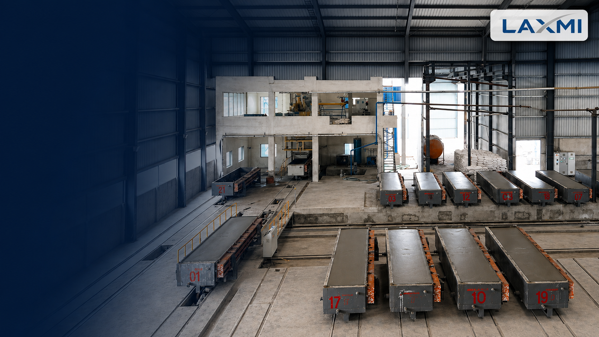
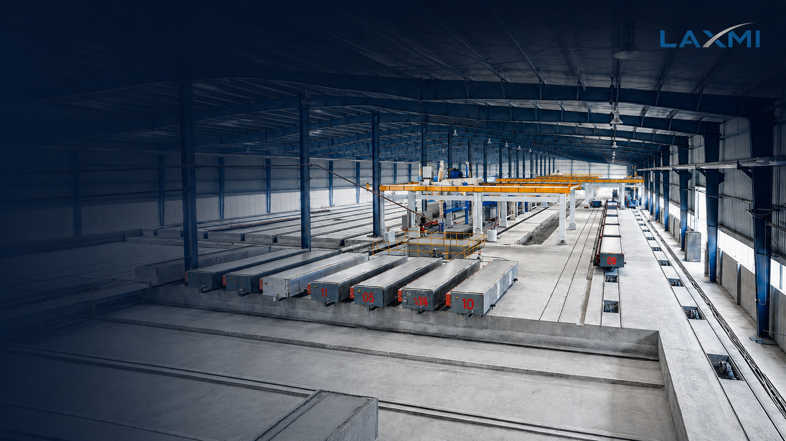
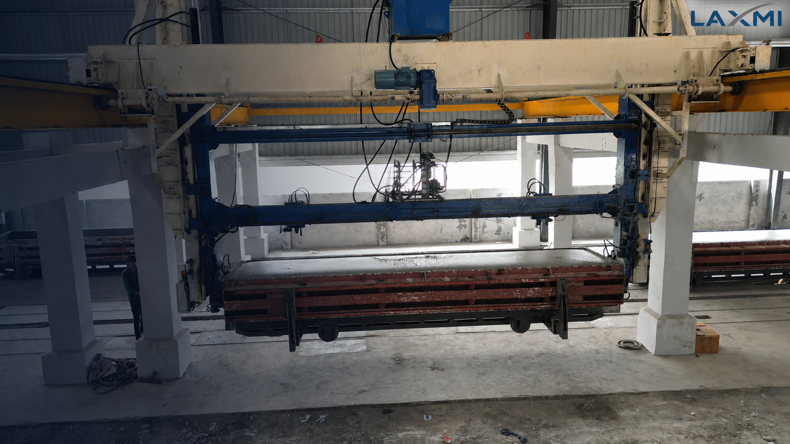
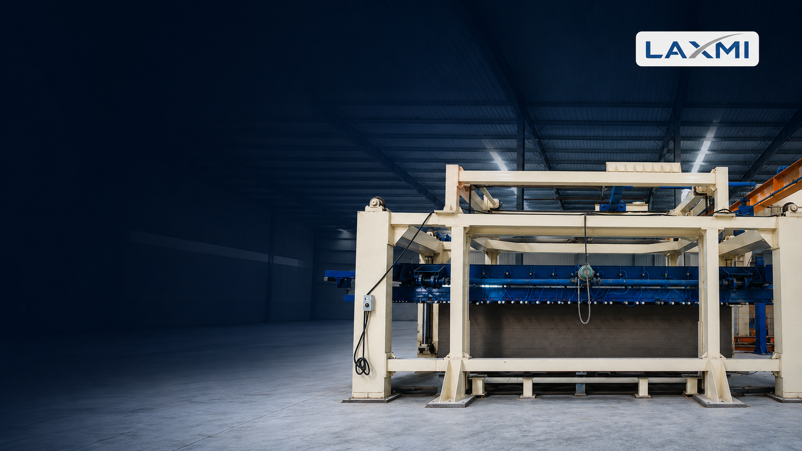
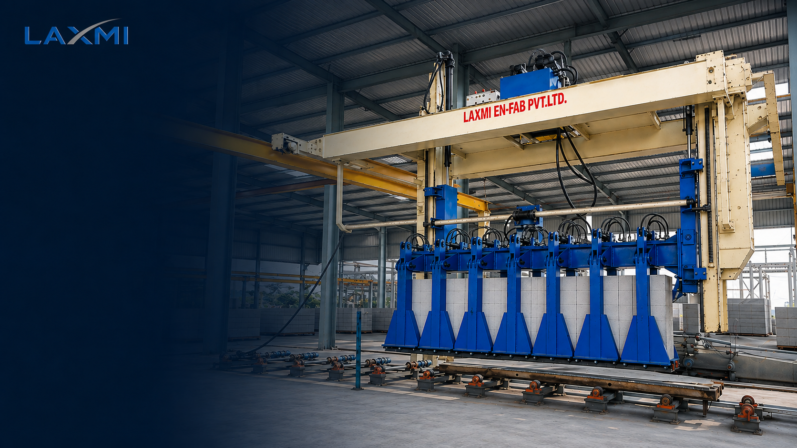

Complete Engineering & Plant Design.
Autoclaved Aerated Concrete manufacturing requires total synchronization between raw material formulation, mechanical flow logistics, cutting precision, and hydrothermal curing. Explore our engineering frameworks, blueprints, and machinery systems.
AAC Engineering Center. Technical blueprints & factory systems.
Explore our end-to-end technical guides covering every phase of setting up, designing, balancing, and operating a high-efficiency AAC manufacturing facility.
AAC Block Production Process
8-stage manufacturing workflow, stoichiometric raw material chemistry, slurry batching, wire cutting, and hydrothermal autoclave synthesis.
AAC Plant Layout
Straight In-Line vs. L-Shape layouts, single vs. double-door autoclave rail logistics, and 6 master site zoning & setback rules.
Complete AAC Plant
Usable batch sizing, 5 standardized capacity tiers (150 to 1,500 m³/day), mixer cycle synchronization, and due diligence checkpoints.
Plant Machinery
8 heavy-duty machinery systems engineered and CNC-machined in Ahmedabad under strict ISO 9001 and IBR statutory compliance.
A synchronized circuit. Continuous 8-stage manufacturing.
Autoclaved Aerated Concrete transforms fly ash / sand and lime into lightweight structural masonry through precision dosing, hydrogen micro-aeration, and high-pressure crystalline hydrothermal synthesis. Eight synchronized stations ensure zero line bottlenecks.
Machinery systems. Engineered for continuous duty.

Storage Silos & Feeders
60T–200T silos for fly ash, cement, and lime with aeration fluidization pads, bin activators, and pneumatic bulker feed.

Batching & Slurry Preparation
Continuous wet ball mills, slurry density measurement, load-cell weighing hoppers, and automated aluminium dosing.

Mould Handling & Pre-Curing
CNC-machined mould boxes, detachable side plates, automated hydraulic ferry cars, and insulated cake-rising tunnels.

AAC 90° Tilting Machine
Smooth hydraulic 90° tilting crane fixture that secures the side plate and demoulds green cake without cracking.

High-Precision Cutting System
High-speed oscillating horizontal wires, vertical cross-cut frames, top crust skimming, and 100% slurry waste recycling.

High-Pressure Autoclaves
Heavy-duty IBR-certified curing vessels (Ø2.0m–Ø2.5m, 21m–35m) with pneumatic safety doors and steam recovery.

Industrial Steam Boiler
Biomass / Coal / Gas boilers (4 TPH to 12 TPH) engineered to deliver steady high-pressure saturated steam.

Auto Palletizing & Packing
Hydraulic cake separators, block de-sticking clamps, automated pallet stackers, and strapping conveyors.